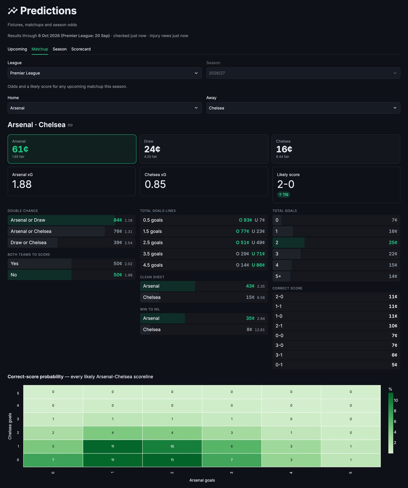
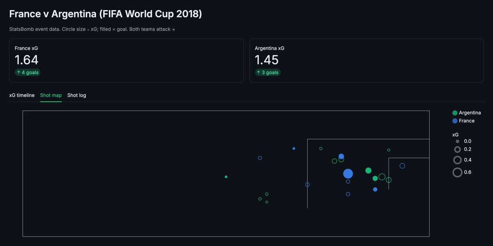

Case file · Data + Forecasting
Soccer Analytics
A football analytics centre built under a hard $0 rule: no paid APIs, no subscriptions, no cloud hosting. It forecasts matches and full seasons, scouts players with xG and expected threat, and measures every model against the bookmaker’s closing line instead of assuming it works. Every data source was checked by fetching it directly before any code relied on it.
§ 01 · The problem
Good football analytics usually sit behind paid data.
Free sources exist, but their real limits are rarely written down: delayed scores, no lineups, endpoints nobody documents.
Forecasting projects also tend to report accuracy without comparing it to the obvious benchmark, the betting market.
§ 02 · What it does
Five steps from free data to a graded forecast.
-
1. Collect
Pulls fixtures, results, squads, and near-live scores from free sources. Each fetch is kept as an unchanged raw snapshot that can be replayed later.
-
2. Match
Matches club names across sources, such as Köln and Cologne or PSV and PSV Eindhoven, into one canonical record per club and per match.
-
3. Forecast
Rates teams and forecasts matches with Poisson and Dixon-Coles models, and simulates full seasons 10,000 times for title, top-four, and relegation odds.
-
4. Grade
Scores every forecast walk-forward, with each match predicted from earlier data only, against base rates and the closing odds, with calibration charts.
-
5. Ask
Shows it all in a Streamlit dashboard, plus an offline, rule-based assistant that answers plain-English questions like “Arsenal vs Chelsea?”


§ 03 · Design choices
Four rules it was built under.
-
Check sources first.
Every claim about a data source was confirmed by a direct fetch. Several assumptions in the original plan were wrong, and the corrections are now regression tests.
-
Measure before shipping.
Changes like Dixon-Coles maximum-likelihood fitting and team-specific home advantage were backtested, and dropped when they didn’t help.
-
Use the market as the benchmark.
The model learns from the closing odds of matches already played, which closed about a third of its gap to the bookmaker. It never uses odds for upcoming games.
-
Stay local and private.
No LLM and no cloud. Usage logging stays on the machine, and is used to decide which features to keep or cut.
§ 04 · Under the hood
A replayable pipeline, with its limits written down.
Source adapters write raw snapshots, which flow into canonical match resolution, a SQLite live store, and a DuckDB analytics store. The models are Elo, ratio-method and Dixon-Coles Poisson, a shots-on-target blend, market-implied ratings, Monte Carlo season simulation, and expected threat built from StatsBomb events.
The caveats are part of the design. Free live scores come from one undocumented source. StatsBomb data has no current-season coverage and a licence that forbids redistribution. The Premier League team-news adjustment is a prior that hasn’t been backtested. And the model still trails the closing line.
§ 05 · Where it stands
Better informed, and still behind the market.
It works end to end, with automatic data refresh. On 10,021 matches across nine leagues the model was never tuned on, market-implied ratings cut the log-loss gap to the closing line from +0.0194 to +0.0127, and all 18 leagues tested improved.
Cloud hosting is built but paused. Next, the chat assistant is meant to become the main interface.